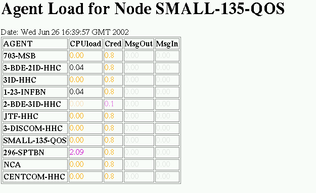
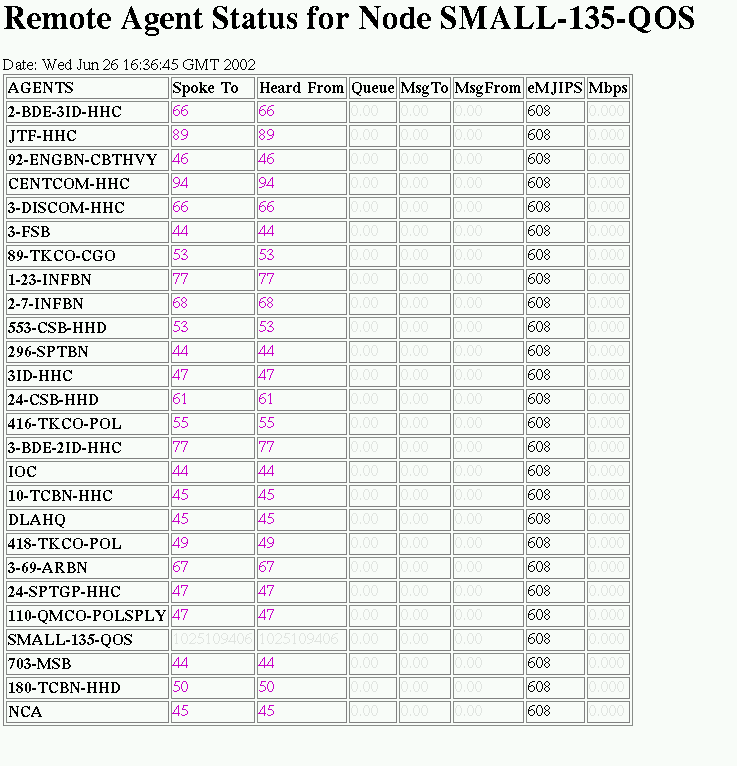
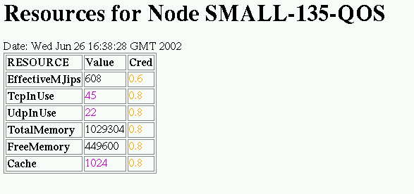
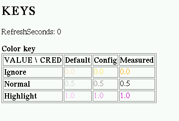

Qos Metrics: Runtime Notes and Example Plugins
JVM flags
Enabling CORBA TypedEventChannels
Each Node in a society can share metrics data with other Nodes by
running a CORBA TypedEventChannel. Channels also allow metrics to be
provided and displayed by non-Cougaar software components.
There are five relevant jvm properties:
-
org.omg.CORBA.ORBClass
-
To use CORBA, this must be set to 'org.jacorb.org.ORB'. The default
is null.
-
org.omg.CORBA.ORBSingletonClass
-
To use CORBA this must be set to'org.jacorb.org.ORBSingleton'. The
default is null.
-
jacorb.verbosity
-
Set this to '0' to suppress JacORB's debug messages (a warning will
still print when the ORB starts up). The default is null.
-
org.cougaar.metrics.stec.mesh
-
Set this to 'true' to connect the channels in a ring. The default is
'false'; in this mode, the channel can be used to access local
host/Node data but not to share data between Nodes.
-
org.cougaar.metrics.topology.iorfile
-
Provide a filename here to allow external CORBA applications to
provide or access metrics data. This is only relevant if the channels
are connected (org.cougaar.metrics.stec.mesh=true). The default is
null.
Configurating the RSS
The RSS can be configured to read data from additional data feeds,
include static data in property-file format. The full specification
language is described elsewhere (see [to be
done]). The following property gives the location of the
configuration URL:
- org.cougaar.metrics.properties
- The value should be a
URL which contains RSS configuration properties. The default is null.
Example Plugins and Servlets
Release 9.4 contains some relatively simple plugins and servlets that
either provide or display useful metrics data. These plugins and
servlets, described below, are also handy as example code for more
complex uses of the metrics services.
- org.cougaar.core.mts.StatisticsPlugin
-
This NodeAgent plugin installs the StatisticsServlet, which displays
message statistics in a web page. You will course also need to
include org.cougaar.core.mts.StatisticsAspect in the list of loaded
aspects.
- org.cougaar.core.thread.AgentSensorPlugin
-
This NodeAgent plugin runs the LoadWatcher, which publishes per-agent
load average data based on ThreadListenerService callbacks.
- org.cougaar.core.qos.metrics.AgentLoadLoggerPlugin
-
This NodeAgent plugin can be used to generate a tab-separated-values
file of per-agent load data, suitable for importing into Excel.
- org.cougaar.core.qos.metrics.MetricsServletPlugin
-
This NodeAgent plugin starts three servlets: AgentLoadServlet, which
displays a table of per-agent load and message counts;
RemoteAgentServlet, which displays a table of various other per-agent
metrics; and NodeResourcesServlet, which displays a table of various
node/host metrics.
- org.cougaar.core.thread.AgentControlPlugin
-
This Agent plugin runs the SchedulerWatcher, which publishes agent
thread usage data based on ThreadListenerService callbacks.
MetricsServletPlugin images
Following are some gifs of the data displayed by the
MetricsServletPlugin for SMALL-135. In the current implementation
only some columns have significant data; the other columns will
display real data in future releases. A color key is provided at the
end.

In the Load display, only the load itself and the credibility of
the metric are significant. This snapshot was captured while
SMALL-135 was starting up, so only some Agents are listed.

In the Status display, the significant values are "Spoke to" (seconds
since the last message was sent to this Agent), "Heard from" (seconds
since this Agent last sent a message), and "eMJIPS" (effective mjips).
The jips value is constant per-host, and in this case all Agents were
running on the same host.

In the Resource display all values are significant. This is a
per-Host display.

This key describes the use of color in the other displays.
R Shapiro
Last modified: Wed Jun 26 13:18:18 EDT 2002